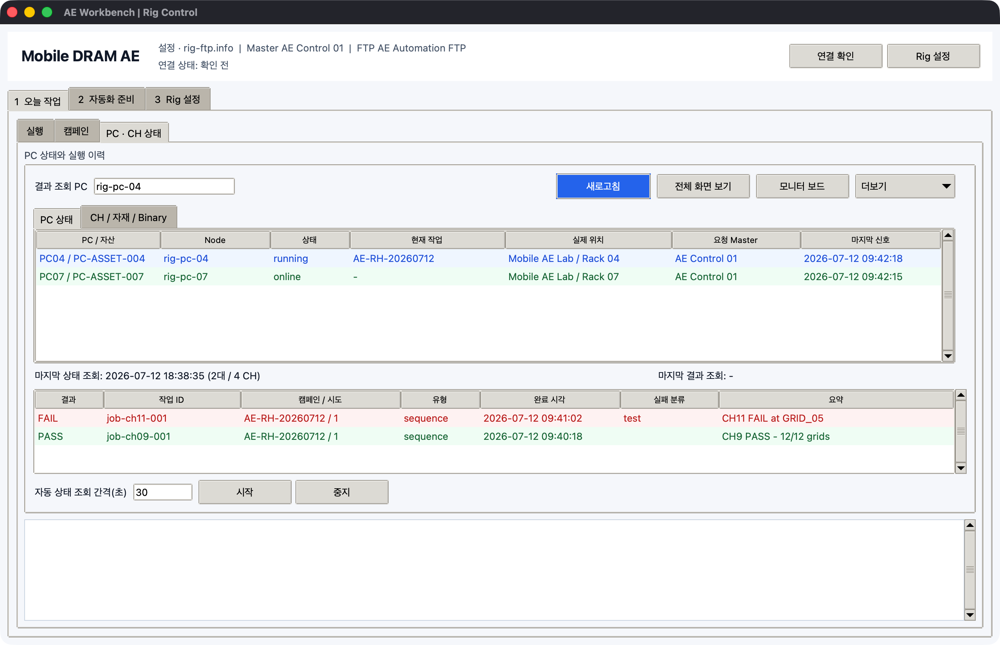

상태 모니터링과 캡처

예시에서 PC04는 실행 중이고 PC07은 online 대기 상태입니다. 아래 결과 표는 CH11
FAIL과 CH9 PASS를 원래 job ID, 캠페인/시도, 완료 시각과 함께 보여줍니다.
상태 새로고침
- master PC에서
RigFtpCommander.exe를 실행합니다. 1 오늘 작업 > PC · CH 상태를 엽니다.새로고침을 누릅니다.- 상태표의 별명, Node, 상태, 현재 작업, 마지막 신호, 상세 내용을 확인합니다.
상태 영역은 두 보기로 나뉩니다.
| 보기 | 확인 항목 |
|---|---|
PC 상태 |
heartbeat, online/offline, 현재 FTP job, 마지막 결과 |
CH / 자재 / Binary |
자유 CH/이름, Slot, SoC, binary 버전·최신 시각·원본 폴더, DRAM/Lot/Sample, Test, SEQ, 상태, Grid 진행 |
등록했지만 아직 접속하지 않은 PC도 offline으로 표시됩니다. 마지막 heartbeat가 polling 주기보다 충분히 오래되면 이전 상태가 idle이어도 offline으로 바뀝니다. 자동 상태 조회는 상태만 읽으며 매크로를 전송하거나 실행하지 않습니다.
설정 파일의 CH 메타데이터와 heartbeat의 실행 상태를 CH/slot/name key로 병합합니다. 따라서 slave가 아직 접속하지 않았거나 heartbeat가 stale이어도 SoC, 자재, binary 원본 정보는 표에 남고 상태만 offline으로 바뀝니다.
화면 component의 텍스트/색상만 새로 판정하려면 오늘 작업 > 실행 > 운영 도구 열기에서
workflow와 대상 PC를 지정한 뒤 상태 규칙 1회를 누릅니다. 이 job은 클릭, 입력, 키
블록을 제외하고 텍스트/색상/AND/OR 모니터 블록만 실행합니다.
결과 로그 보기
- 상태표에서 PC를 선택하거나
결과 조회 PC에 node id를 입력합니다. 새로고침을 누릅니다.- PASS/FAIL 실행 이력 표에서 작업을 더블클릭해 stdout, stderr와 완료 시각을 봅니다.
원격 모니터 보드
- 상태표에서 PC 한 대를 선택합니다.
새로고침으로 최신 실행 결과를 확인합니다.모니터 보드를 누릅니다.- workflow에서 지정한 탭별로
장비 / CH, 표시 상태, 실제값, 기대값과 PASS/FAIL을 확인합니다.
보드 이름과 탭 순서는 매크로 생성기의 보드 화면 구성 값을 따릅니다. CH9, CH11, PC04-RIG2 같은 자유 이름과 CH가 없는 - 행을 함께 표시할 수 있습니다. 원격 보드는 slave가 완료해 올린 최신 구조화 결과를 표시하며 실시간 영상 스트리밍은 아닙니다.
구조화 결과에 completed_grids와 total_grids가 있으면 이를 우선 사용합니다. 텍스트 3/12를 읽는 규칙은 block 이름이나 표시 상태에 GRID, PROGRESS, 그리드, 진행을 포함해야 합니다. 이 표식이 없으면 AND/OR 조건 결과의 1/2 matched를 Grid 진행률로 오인하지 않습니다. SEQ package 실행 시에는 bundle의 전체 Grid 수가 먼저 등록되고, 실제 완료 수는 SK Commander monitor rule이 읽은 값으로 갱신됩니다.
screenshot 요청
방법 1:
- 상태표에서 slave row를 더블클릭합니다.
- slave가 전체 화면을 캡처해 FTP에 올립니다.
- master가 PNG를 열어 보여줍니다.
방법 2:
PC 상태와 실행 이력에서 node를 선택하거나 입력합니다.전체 화면 보기를 누릅니다.
요청마다 고유한 job label을 사용하므로 이전 PNG를 새 응답처럼 열지 않습니다. 45초 안에 이번 요청과 정확히 일치하는 파일이 오지 않으면 timeout으로 기록합니다. 최소 요청 간격은 master와 slave 양쪽에서 적용됩니다.
Excel export
PC 상태와 실행 이력 > 더보기를 엽니다.Excel 내보내기를 누릅니다..xlsx저장 위치를 선택합니다.
파일에는 PC State와 CH Inventory 두 시트가 생성됩니다. 두 번째 시트는 SoC, binary provenance, 자재, test/SEQ, 현재/완료/전체 Grid를 행 단위로 내보냅니다.
Campaign ID/제목/attempt, acceptance와 failure class도 같은 CH 행에 포함됩니다.
AE 실패 분류
결과 행을 선택하고 더보기 > 선택 결과 분류를 누르면 자동 분류를 검토하고 담당자,
재시험/보류/종결 조치와 근거를 남길 수 있습니다. 기록은 원본 result JSON이 아니라
triage/{node}/{job}.json에 별도로 저장됩니다. 자세한 흐름은
AE 캠페인 운영을 참고합니다.
오래된 파일 정리
PC 상태와 실행 이력 > 더보기를 엽니다.오래된 파일 정리를 누릅니다.
보관 개수는 3 Rig 설정 > Master · 원격 PC > 고급 정책에서 조정합니다.
Emergency stop
1 오늘 작업 > 실행으로 이동합니다.- 상단
긴급 중단을 누릅니다. - 확인창에서 승인합니다.
실행 중인 작업 하나만 정확히 중단하려면 상태표에서 PC를 선택하고
더보기 > 선택 작업 긴급 중단을 사용합니다. 전체 stop signal 해제는 해당 Slave의
3 Rig 설정 > 이 PC Agent > 더보기에서 수행합니다.